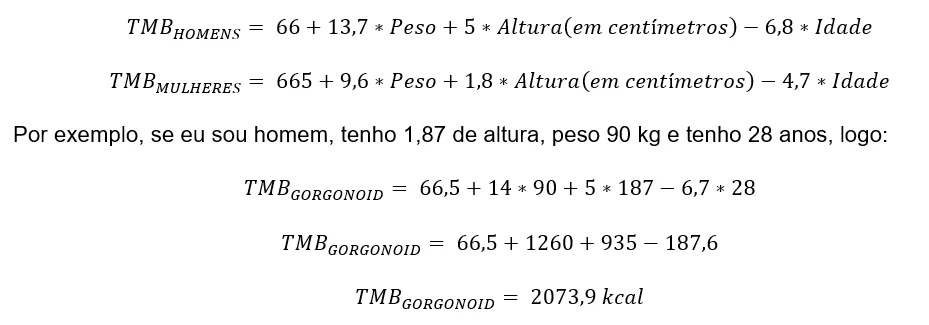

A taxa metabolica basal é A taxa metabólica basal (TMB) é a quantidade de energia
necessária para a manutenção das funções vitais do
organismo ao longo de 24 horas. Ela é medida em calorias,
que é a energia
extraída pelo nosso corpo a partir dos macronutrientes
(carboidratos, proteínas e gorduras totais). De maneira simplificada podemos dizer que o TBM (taxa de metabolismo basal)
é a quantidade de kcal (calorias) que o corpo gasta em roupouso, para manter seu corpo.
A TBM pode váriar de idade peso e sexo, podemos utilizar para planejar sua dieta e auxiliar no emagrecimento ou no ganho de peso.
Como utilizar a TBM no processo de emagrecimento e no ganho de peso?
Podemos utilizar a taxa de metabolismo basal para ser uma base de medidas para no processo de emagrecimento ou chanho de massa.
No processo de emagrecimento é necessário fazer um deficit calórico que é você gastar mais calorias do que você ingeri. Já no processo
de ganho de peso você deve ingerir mais calorias do que você gasta.
Por isso é muito importante sabermos qual é a nossa Taxa de metabolismo basal.
Como calcular?
Para calcular a taxa de metabolismo basal podemos utilizar a fórmula criada pela pela organização mundial da saúde, contida na tabela abaixo.

Outra maneira de calcular a taxa de metabolica basal é utilizando a calculadora abaixo.
Next Page